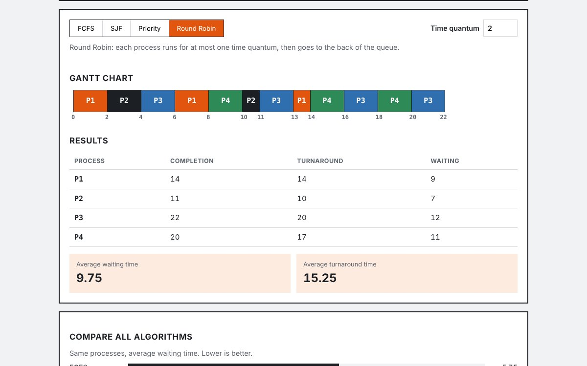
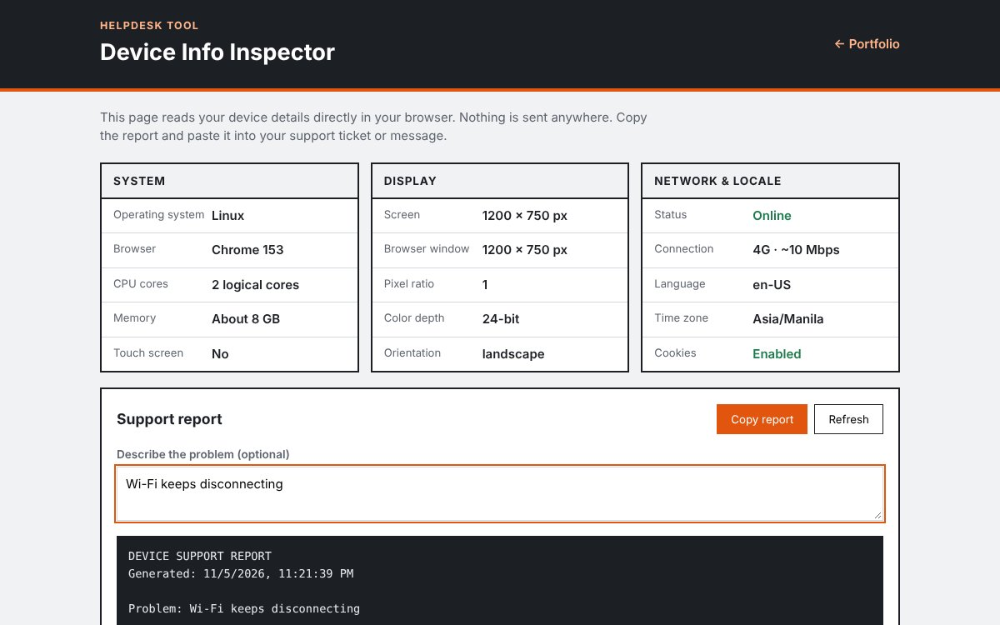

Part no. BIT-CT-2027 · Bulacan State University
John Patrick S. Sunga
Technical Support & Systems Intern
Adaptable, tech-savvy Computer Technology student with strong analytical thinking and a knack for troubleshooting operating systems, hardware, and everyday IT issues.
| Training hours to render | 500 hrs |
|---|---|
| Availability | 2nd Semester, A.Y. 2026–2027 |
| Preferred setup | Bulacan / Metro Manila |
| Expected graduation | 2027 |
Overview
I'm a Computer Technology student at the College of Industrial Technology, Bulacan State University. I adapt quickly to new tools, think through problems step by step, and enjoy finding the root cause when a system misbehaves. I'm looking for a growth-oriented OJT placement where I can apply my troubleshooting and operating systems knowledge and deliver value to the team from day one.
Core competencies
- Installing, configuring, and troubleshooting Windows and Linux
- Diagnosing hardware and software issues methodically
- Basic programming in C++ and web development with JavaScript
- Fast learner who documents fixes clearly for others
- Degree
- Bachelor of Industrial Technology
- Major
- Computer Technology
- Institution
- Bulacan State University – College of Industrial Technology
- Years
- 2023 – 2027
- Senior high
- St. Mary Academy of Hagonoy
Technical skills
Tools & platforms
Design & digital media
Programming
Industrial & technical foundations
Featured projects

Project 3.1
CPU Scheduling Simulator
Role: Developer
An operating systems learning tool that runs a list of processes through First-Come First-Served, Shortest Job First, Priority, and Round Robin scheduling. It draws a Gantt chart and calculates each process's waiting and turnaround time, so you can compare algorithms side by side instead of solving them by hand.

Project 3.2
Device Info Inspector
Role: Developer
A helpdesk tool that reads a user's device details in the browser: operating system, browser, screen size, CPU cores, memory, language, time zone, and connection status. Users can copy everything as a ready-made support report, so a technician gets accurate details without walking the user through settings.
Interested in bringing me onto your team for OJT? Let's connect.
I'm looking for a 500-hour placement in technical support or systems administration. Send me a message and I'll reply with my CV and availability.
Email me- Mobile
- 0912 589 3252
- GitHub
- github.com/YOUR-USERNAME
- Address
- Sta. Monica, Hagonoy, Bulacan
- Preferred setup
- Bulacan / Metro Manila